CSF model fit: st_temp_ecc
Report generated on 08-Dec-2021 17:41:37
Fitting error
| Dataset | Fitting error | Sensitivity adjustment |
| CSF from FovVideoVDP | steCSF temp channels | CSF from FovVideoVDP | steCSF temp channels |
| Average | 4.09623 [dB] | 2.72574 [dB] | N/A | N/A |
| modelfest | 1.69239 [dB] | 0.559762 [dB] | 1 | 1 |
| hdrvdp_csf | 0.599993 [dB] | 0.597118 [dB] | 2.02661 | 1.49088 |
| laird2006 | 1.20286 [dB] | 1.36738 [dB] | 1.33362 | 1.12279 |
| virsu1979 | 7.98618 [dB] | 4.43 [dB] | 0.45043 | 1.13891 |
| robson1966 | 4.71321 [dB] | 2.02116 [dB] | 0.982405 | 0.913038 |
| kelly1979 | 3.83375 [dB] | 2.80268 [dB] | 0.101941 | 0.122508 |
| krajancich2021 | 10.1289 [dB] | 10.1381 [dB] | 1.74752 | 1.67557 |
| virsu1982 | 3.80885 [dB] | 1.63286 [dB] | 0.543216 | 0.977673 |
Model parameters
CSF from FovVideoVDP
p.S_0 = 1.02807;
p.k_cm = 0.235762;
steCSF temp channels
p.S0_sust = 1.4564;
p.S0_trans = 26.6908;
Legend
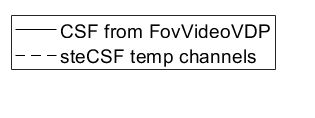
↸Dataset: [modelfest] ModelFest
Achroatic CSF as a function of frequency
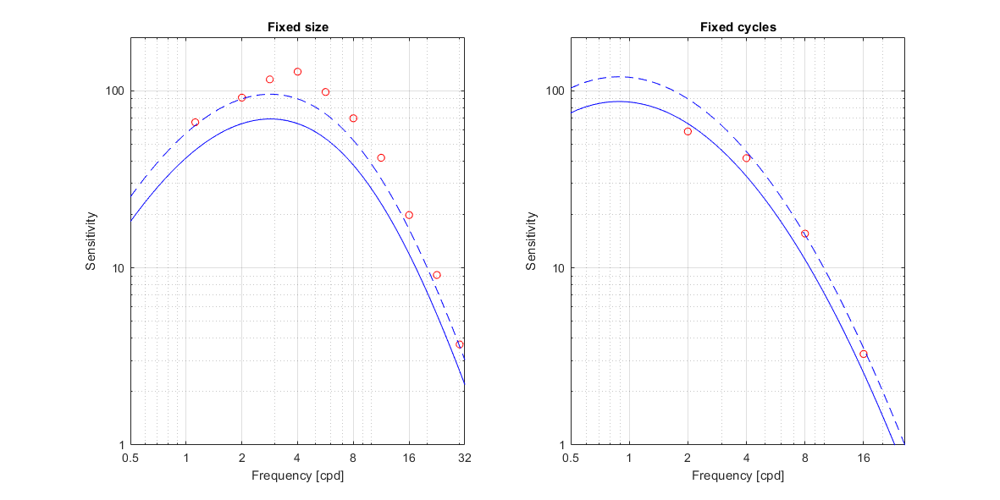
↸Dataset: [hdrvdp_csf] HDR-VDP CSF
Achromatic CSF as a function of frequency
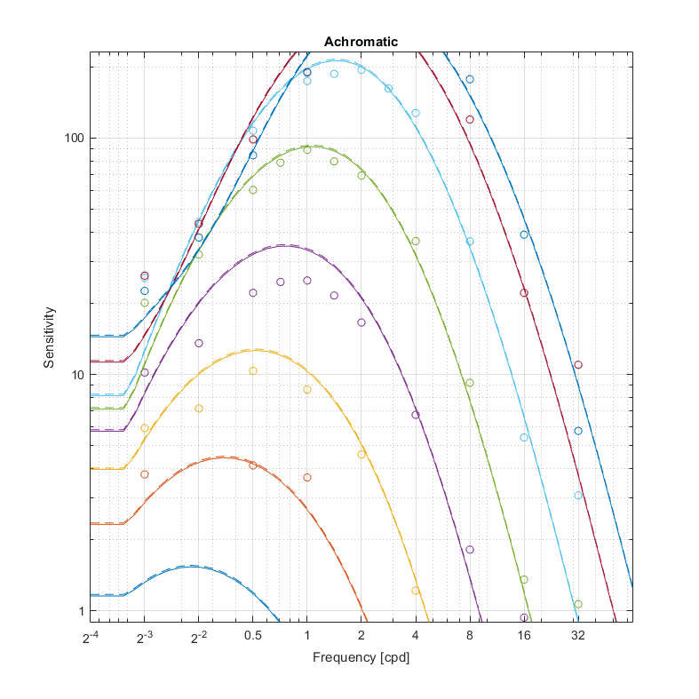
Achromatic CSF as a function of size
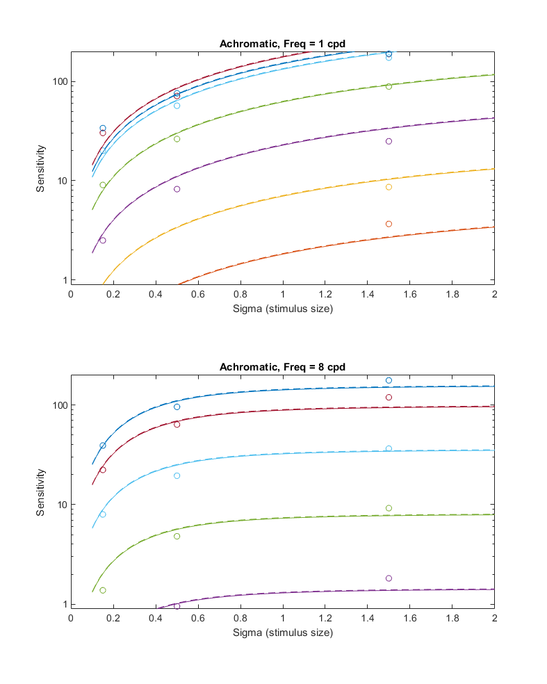
↸Dataset: [laird2006] Laird et al. 2006
Achromatic CSF as a function of temporal frequency for different spatial frequencies
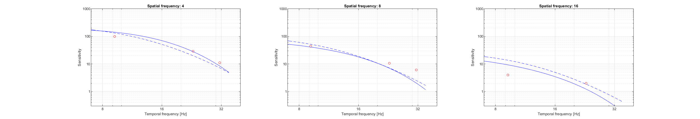
↸Dataset: [virsu1979] Visual resolution, contrast sensitivity, and the cortical magnification factor
Contrast sensitivity of central and peripheral vision as a function of spatial frequency and eccentricity
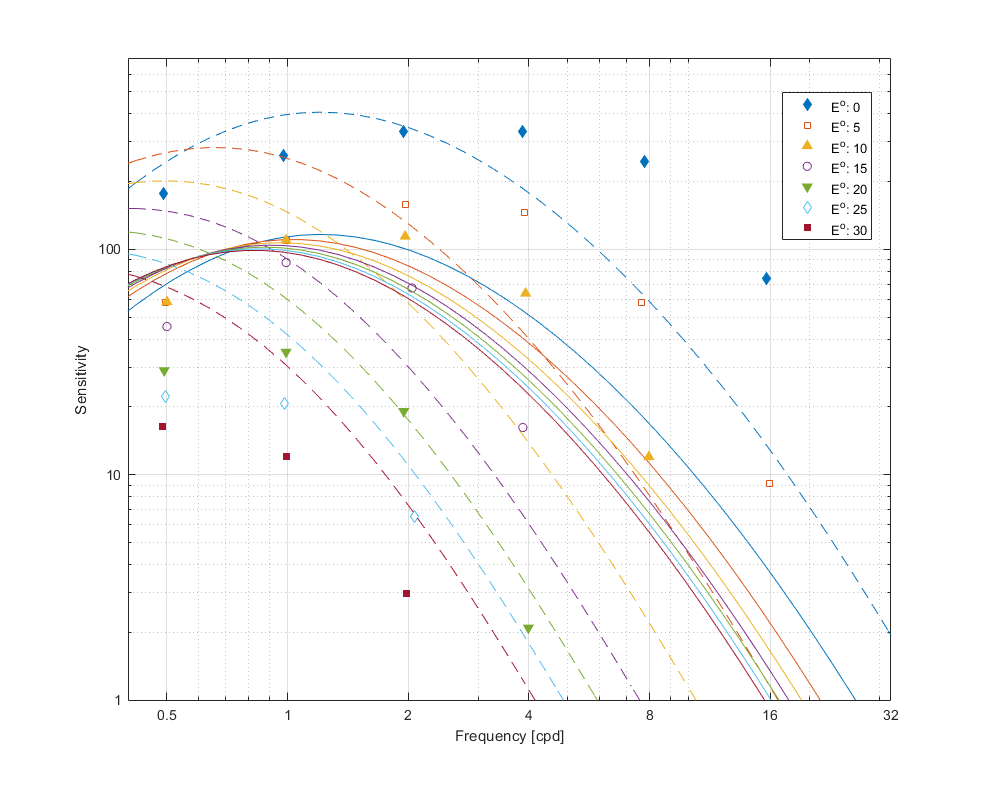
↸Dataset: [robson1966] Spatial and Temporal Contrast-Sensitivity Functions of the Visual System
Spatial CSF for different temporal frequencies
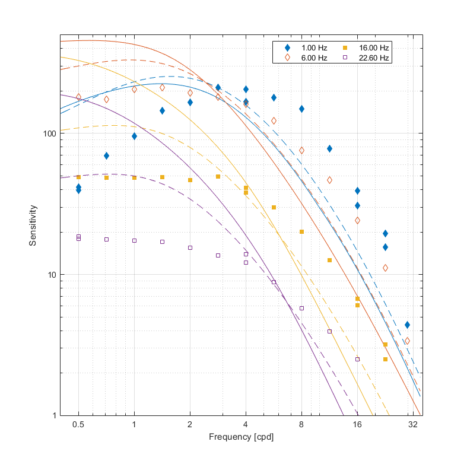
Temporal CSF for different spatial frequencies
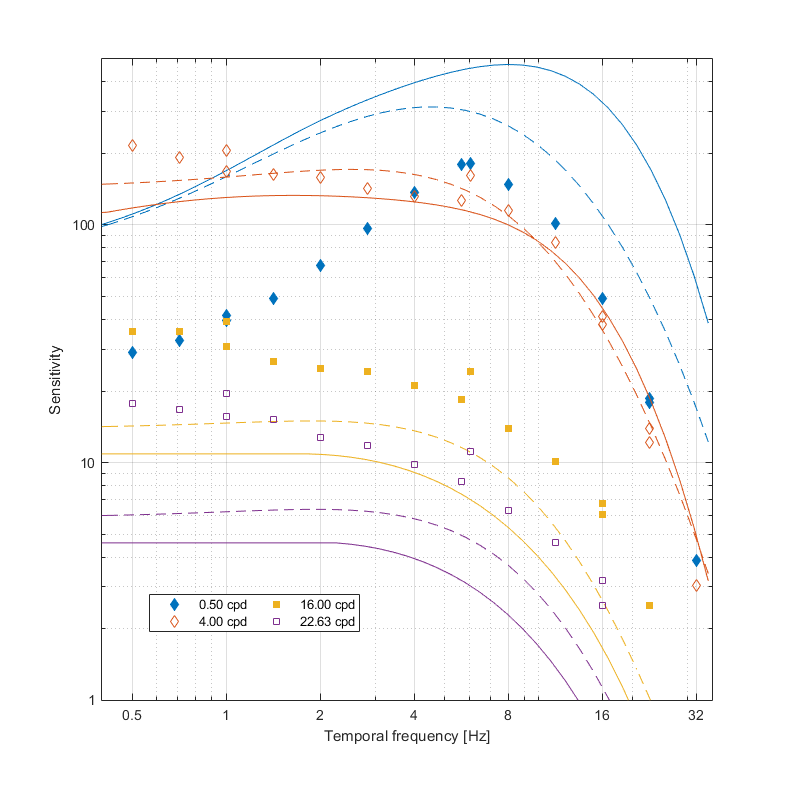
↸Dataset: [kelly1979] Motion and vision. II. Stabilized spatio-temporal threshold surface
Spatial CSF for different temporal frequencies
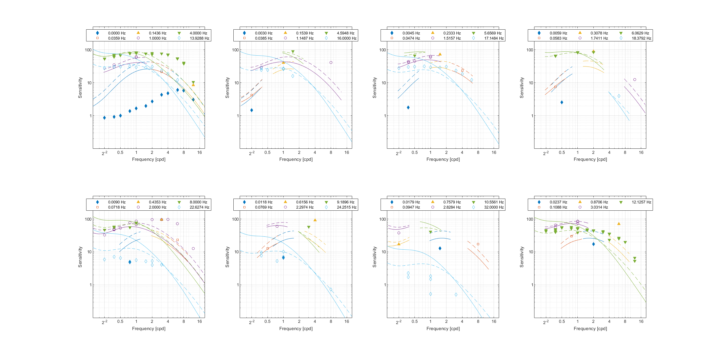
Temporal CSF for different spatial frequencies
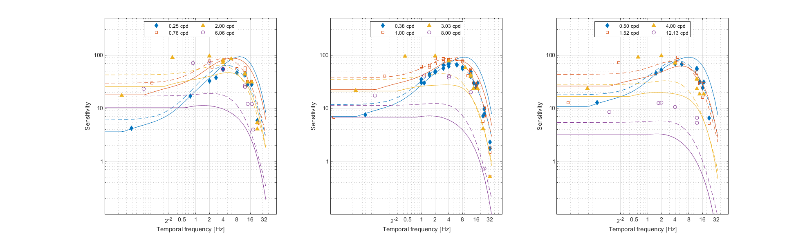
↸Dataset: [krajancich2021] Eccentricity-dependent spatio-temporal flicker fusion
Critical fusion frequency at eccentricities
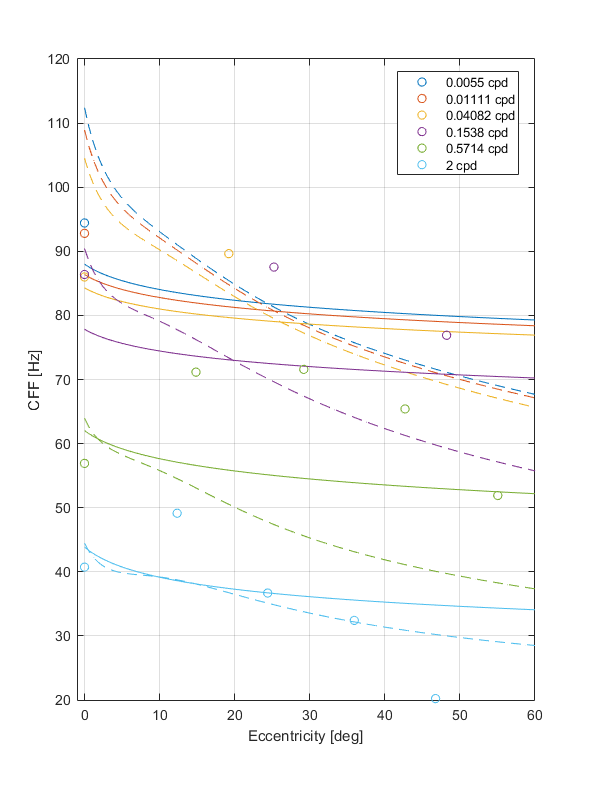
Critical fusion frequency at luminance levels
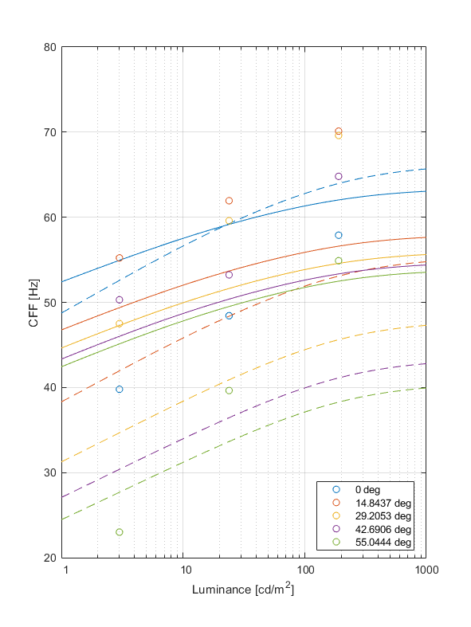
Critical fusion frequency for spatial frequencies
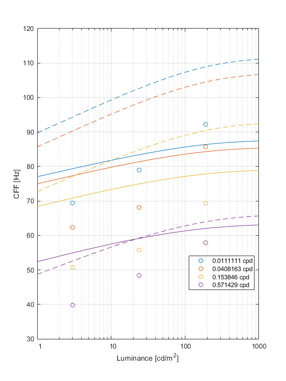
↸Dataset: [virsu1982] Temporal Contrast Sensitivity and Cortical Magnification
Contrast sensitivity of central and peripheral vision at differern temporal frequencies and eccentricities
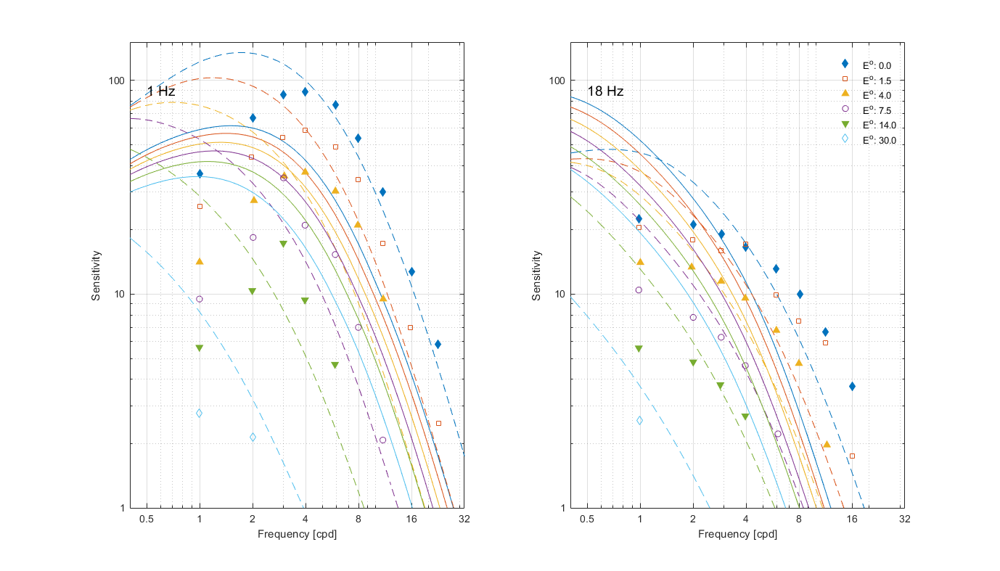